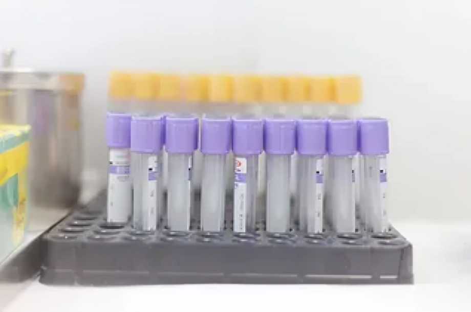

Ambulance and Emergency Call Centre

Our ambulance service is available round the clock. We offer quality medical emergency transportation services in Addis Ababa and surrounding areas.
The NMC ambulances are equipped to international standards and always staffed by trained critical care nurses and drivers. Our ambulance crews work in tandem with our Emergency Call Centre (ECC). The ECC is located on-site and operational 24/7. Operators staffing the ECC are trained medical professionals and will provide medical advice over the phone.
Emergency Room

The Emergency Room (ER) at NMC is open 24 hours a day, throughout the year. In the ER, we treat patients who have suffered a recent injury, have been in an accident or who have developed a sudden illness and require urgent medical attention. The ER team works closely with the NMC Emergency Call Centre and ambulance crew. We have the equipment, medical supplies and trained staff to manage a variety of emergencies. We care for patients of all ages with different emergency conditions.
Intensive Care Unit

The Intensive Care Unit (ICU) is a specialist ward that is designed to handle the needs of critically ill patients. Our team of medical specialists is on standby round the clock to treat patients requiring intensive and emergency care. The ICU has a total of 8 beds – 5 fully equipped intensive care beds and 3 ‘step-down’ beds for patients transitioning out of intensive care. In addition, we also operate an isolation room prepared to admit a patient with a serious infectious disease at very short notice.
Operating Theatres

Our two operating theatres are open 24/7 to cater for scheduled surgeries as well as emergency cases. The theatre team is made up of highly skilled and experienced surgeons, anaesthetists, theatre nurses and technicians.
We are now equipped to carry out major surgeries including trauma cases, general surgery, laparoscopic surgery, chest surgery and vascular surgery. We aim to treat patients at NMC if possible, but the surgical team can also stabilize critically ill trauma patients for medical evacuation if necessary. Our surgical team has the capability to perform minimally invasive surgery when needed which for patients means shorter hospital stays, less medication, shorter periods of recovery, and a faster return to normal activity
Laboratory
Our in-house laboratory is open 24 hours and is staffed by experienced and skilled technicians. The laboratory offers a wide range of tests to aid your physician to make diagnoses, evaluate treatments, and monitor diseases.
- Biochemistry analyser
- Coagulation screening device
- Haemoglobin A1C machine
- Bloodgas analyser
- Hemocube machine